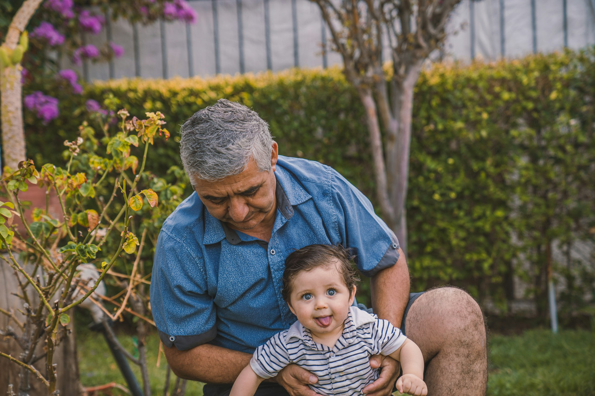
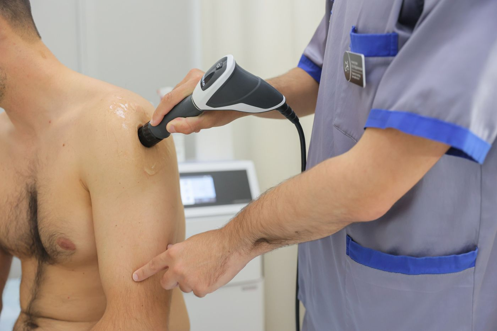
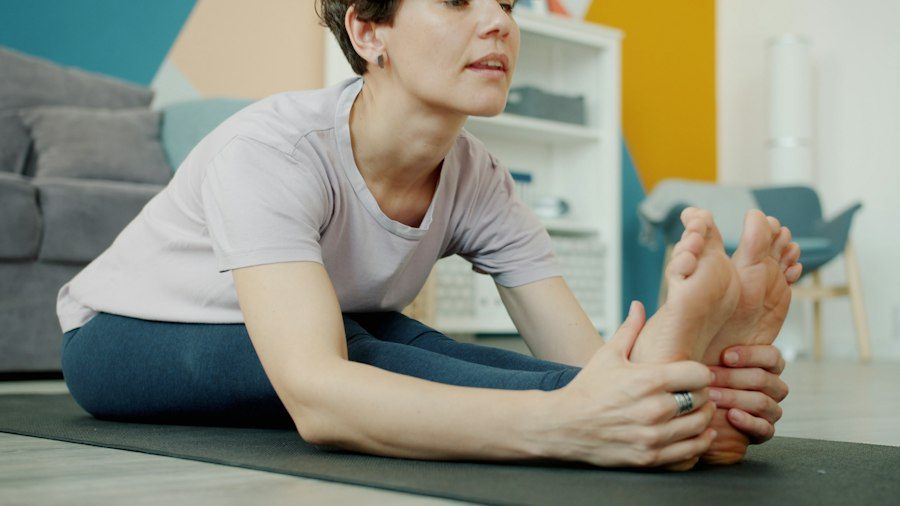
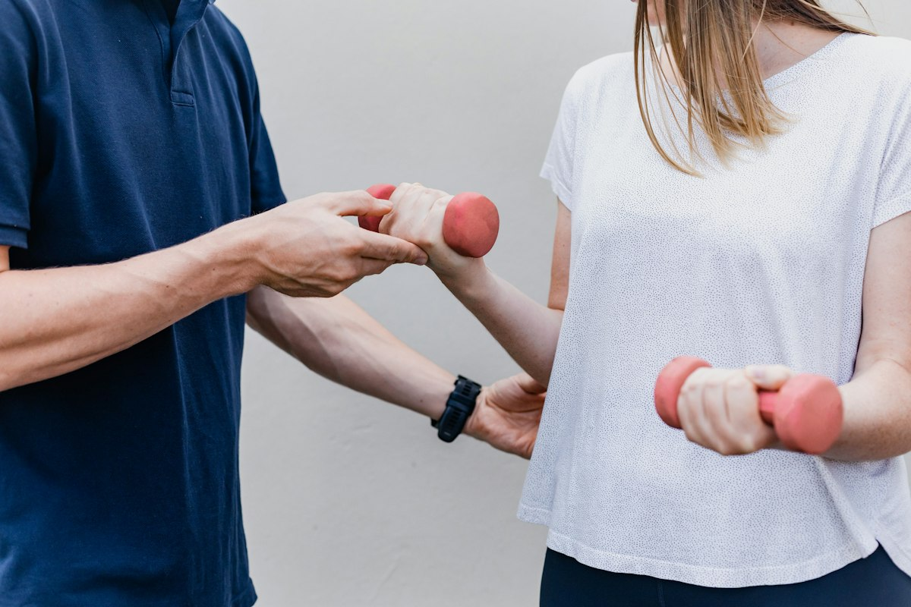
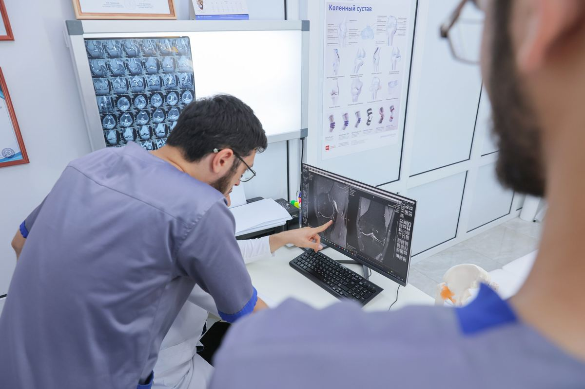

ХА
Хаджалов Абузар Магомедович
Травматолог-ортопед, кистевой реабилитолог
Суставы, травмы, восстановление после операций, PRP.
3 000 ₽

Центр восстановительной медицины · Махачкала
Ортопеды, невролог и реабилитологи. Сначала находим причину, потом составляем план лечения — цену вы знаете до начала.
С чего начать
3 вопроса — 30 секунд
Ответьте на три вопроса — покажем, к кому записаться и сколько это стоит.
Направления
 Спина и шея
Спина и шея
Грыжи, протрузии, остеохондроз. Невролог и мануальный терапевт.
полный приём 8 000 ₽ Суставы
Суставы
Колено, тазобедренный сустав. PRP, ударно-волновая терапия, ЛФК.
приём ортопеда 3 000 ₽
Плечо и кистьПосле переломов и травм: разработка кисти, тейпирование, УВТ.
приём ортопеда 3 000 ₽
СтопаПяточная шпора, плоскостопие. Индивидуальные стельки Formthotics.
УВТ 3 000 ₽
РеабилитацияЛФК со взрослыми и детьми, гимнастика при сколиозе по методике СИАС.
ЛФК 2 500 ₽Как проходит приём
Врач собирает жалобы и историю: когда началось, что усиливает боль, были ли травмы и операции.

Врач смотрит, как двигается сустав или спина, и проводит несложный физический тест.

МРТ, рентген, заключения — врач объяснит простыми словами, что на них видно.

Вы получаете курс процедур и знаете, сколько он стоит, до начала лечения.
Принцип центра
Для двух пациентов с одинаковым диагнозом нельзя использовать одну и ту же программу: для одного она будет слишком лёгкой, для другого — невыполнимой. Поэтому план лечения мы составляем под вас.
Второе мнение
Бывает, что от операции можно отказаться — если вовремя начать физиотерапию и ЛФК. Ортопед посмотрит ваши снимки и честно скажет, есть ли смысл пробовать без операции.
Специалисты
Суставы, травмы, восстановление после операций, PRP.
Боль в спине и шее, грыжи, спортивные травмы.

Стаж 30 лет. Окончил ДГМИ, переподготовка по эндоскопии в ГНЦ колопроктологии (Москва). Гастроскопия и колоноскопия, в том числе во сне.

Лечебная гимнастика по методике СИАС: сколиоз и осанка у детей и взрослых, детская ЛФК.
Занятия с детьми с ДЦП, СИАС, массаж.

Стаж 9 лет. Сеченовский университет, повышение квалификации по гастроэнтерологии и гепатологии. Желудок, кишечник, печень.
Центр учит других врачей. Павел Куделя проводит здесь авторские семинары по сухим иглам для специалистов, в центре проходил семинар KinesioCourse по кинезиотейпированию.
Запись без ожидания на линии
Сайт, WhatsApp или звонок: администратор подберёт врача, запишет на свободное время и напомнит о визите накануне.
Пример того, как работает ИИ-администратор центра.Методы
Нам доверяют
Применяем методы, доказавшие свою эффективность и безопасность.
Зарегистрированное медицинское учреждение с необходимыми лицензиями.
Осторожный подход: только безоперационные методы восстановления.
В сложных случаях вас посмотрят несколько специалистов центра, чтобы поставить точный диагноз.
Первый этаж, вход без ступенек, парковка у входа.
Бесплатно — чтобы визит к врачу был спокойнее.
Цены
Прайс центра на ПроДокторов от 19.10.2026. Есть рассрочка без переплат и справка для налогового вычета.
Весь прайс →Пример концепции. Фото врачей, процедур и кабинетов — центра (фотосессия 2024 со старого сайта); фото на первом экране, «Стопа», «Реабилитация» и борьба — Unsplash. Цены — прайс клиники.